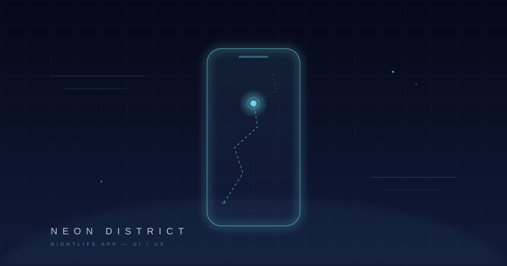

東京の夜を再定義するアプリ。クラブ、バー、ライブハウス、深夜営業の飲食店 — 東京のアンダーグラウンドシーンを一つのプラットフォームに集約するUIを設計した。

東京の夜を再定義するアプリ。クラブ、バー、ライブハウス、深夜営業の飲食店。東京のアンダーグラウンドシーンを一つのプラットフォームに集約するUIを設計した。
ユーザーリサーチから発見した「偶然の出会い」をデザインの中心に据え、計画された夜ではなく、予期しない体験へと導くインターフェースを目指した。
ダークUIを基調に、ネオンのような光のアクセントを配置。地図ベースの探索と、気分やジャンルからレコメンドする2つの導線を設計した。
情報過多にならないよう、Progressive Disclosureパターンを採用。ユーザーが必要な情報に段階的にアクセスできる構造で、没入感と使いやすさを両立させた。
ローンチ初月で5万ダウンロード突破。App Store「今日のアプリ」にフィーチャーされ、東京のナイトカルチャーメディアから注目を集めた。
ユーザーからは「使っているだけで夜が楽しみになる」という声が多く寄せられた。UIそのものが体験の一部になる — そんなデザインを実現できたプロジェクトだった。